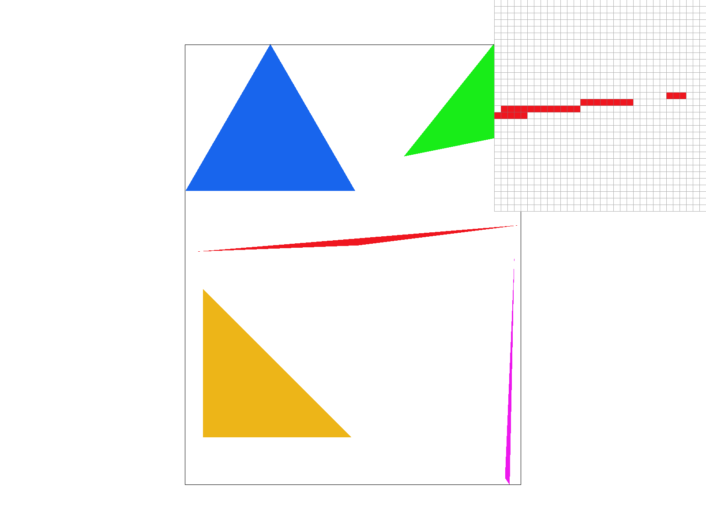
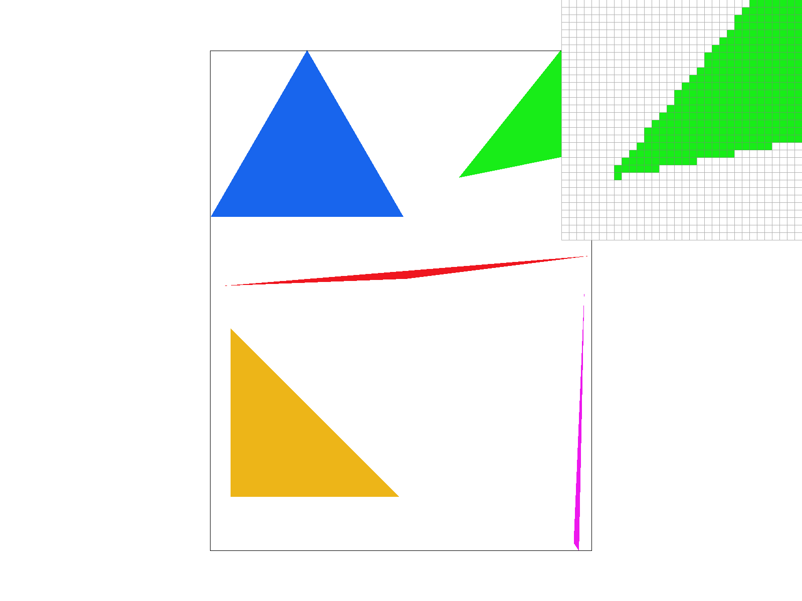
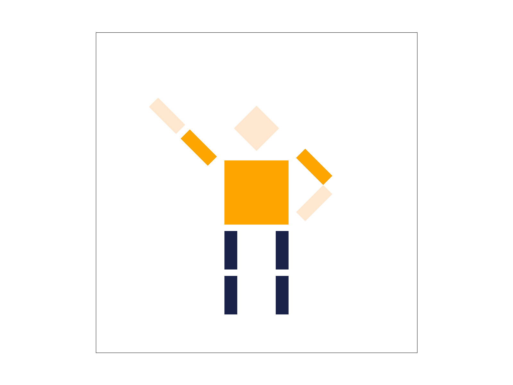
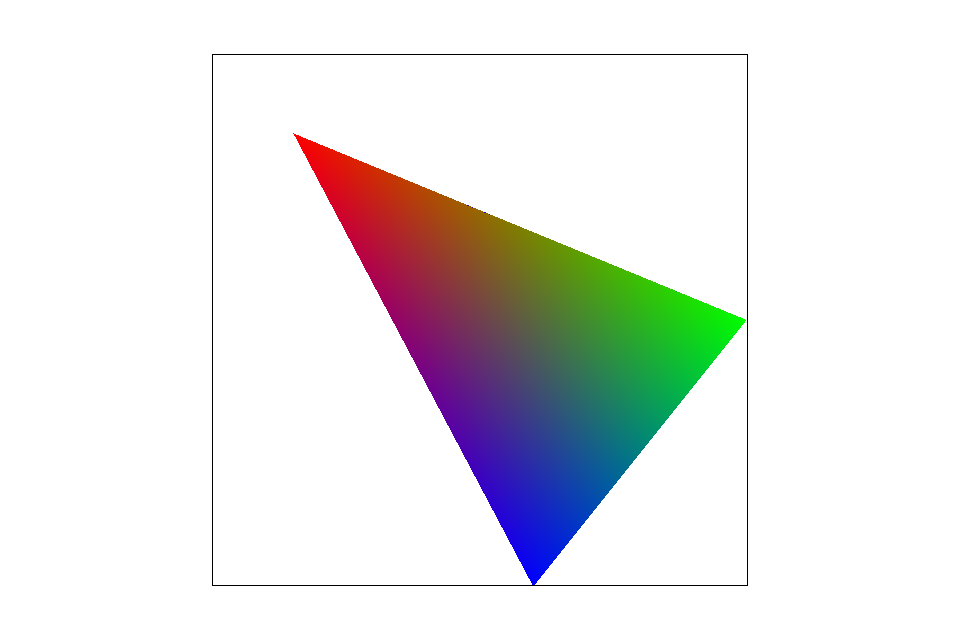
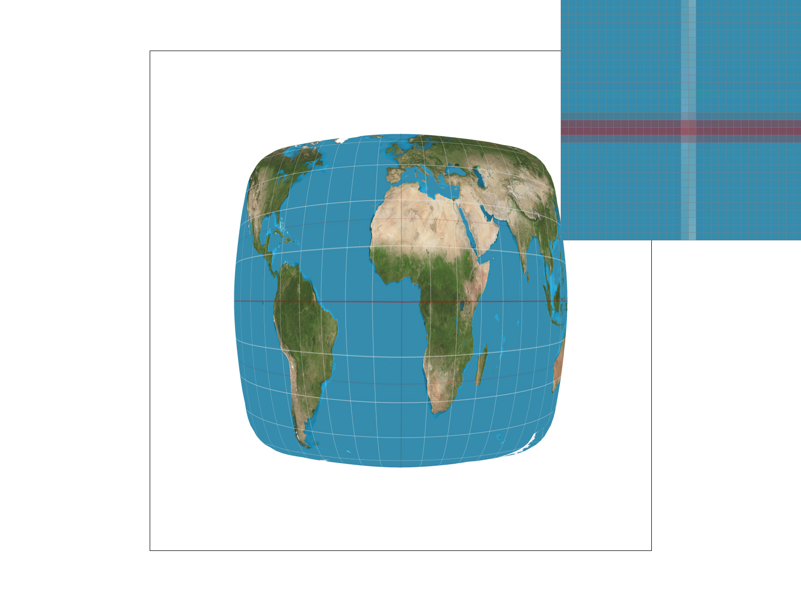
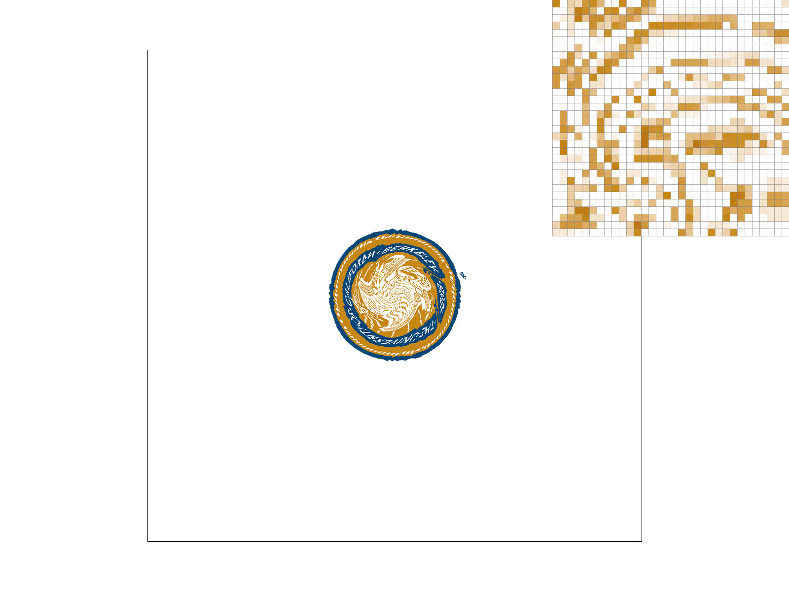
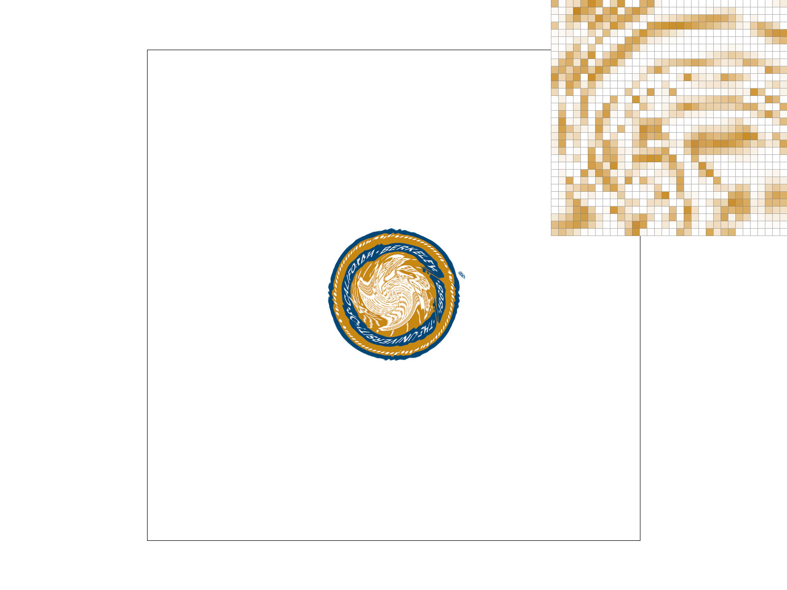
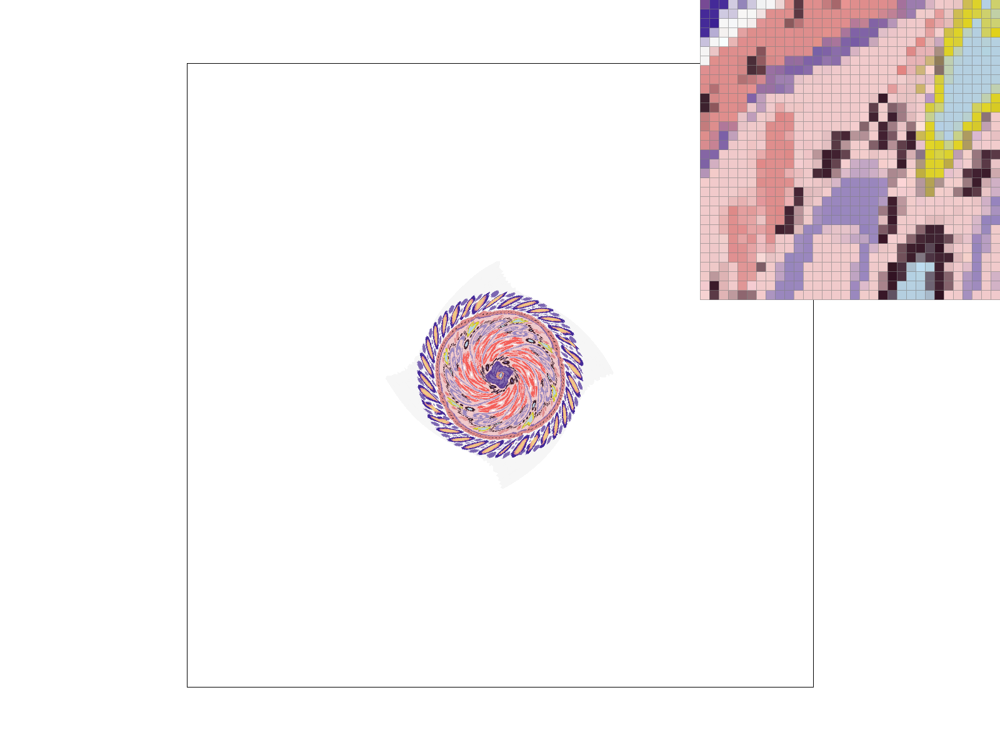
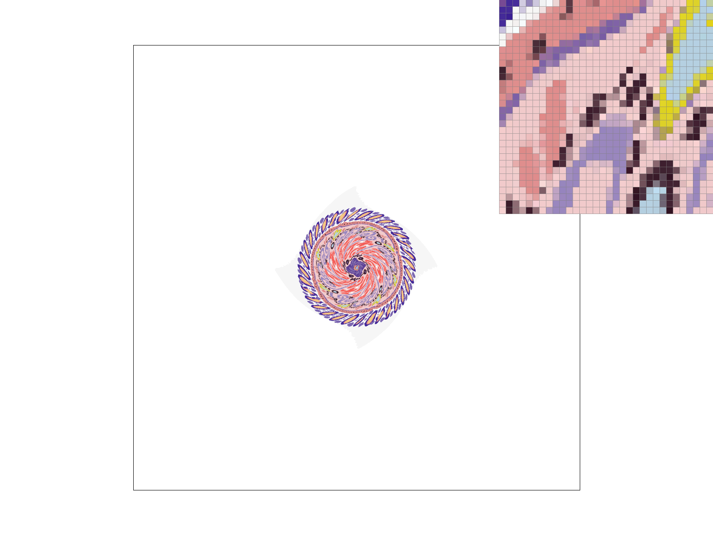
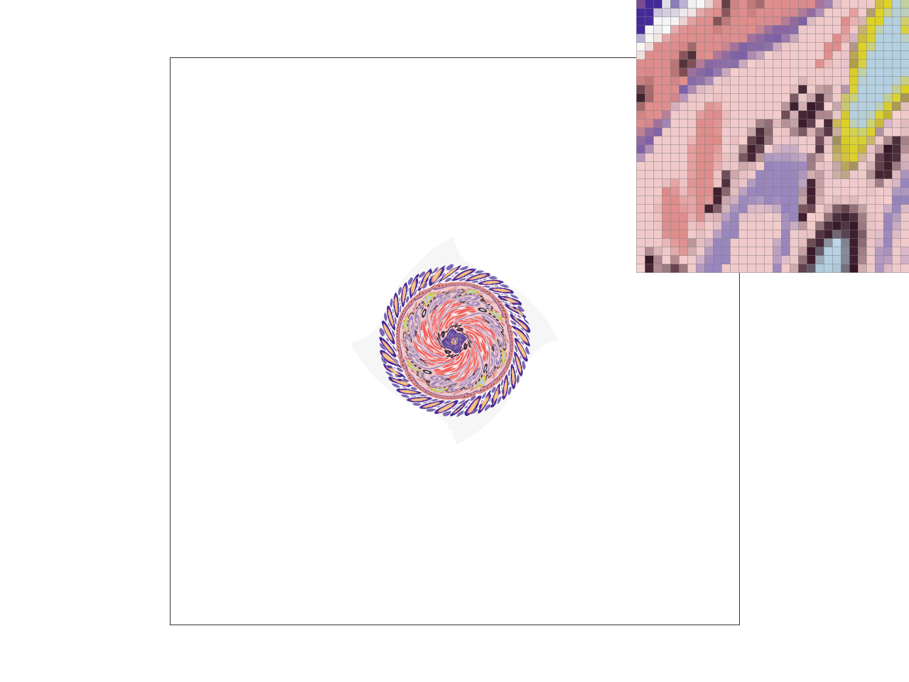

Overview
This is a projeact where I implemented a rasterizer.
A rasterizer can take inputs of images and then turn them into pixels and then display them on a screen.
The basic objects can be composed of dots (pixels), lines, and triangles. I implemented a way to draw these objects in pixels on screen.
Simply drawing these objects out can cause aliasing, which causes their edges being not so smooth. I then implemented the method of supersampling to sample an image with higher resolution, and then convert it back to the original size by averaging pixels.
I also implemented transformations that uses matrix multiplications to transform certain objects.
When given a texture, there needs to be a method that map the texture onto the trasformed objects. I then implemented various methods of texture mapping to apply textures onto objects.
Section I: Rasterization
Part 1: Rasterizing single-color triangles
When rasterizing a triangle, I use the coordinates of the three vertices of a triangle and the color of that triangle.
The coordinates, given in x's and y's, are floats (decimals) and thus can fall anywhere in a pixel. I first use the determinant of all three coordinates to make sure that point 0, 1, and 2 are arranged in a counterclockwise way. That is, if I start with point 0, and then by moving counterclockwisely, I get point 1 and then point 2. If the arrangement is different from this, I swap point 0 and point 1 to make sure that the order is what I want.
Then, I calculate the max's and min's of x and y coordinates. This is to find the tightest bounding box of the triangle. By doing this, I can search fewer pixels around the trangle when rasterizing it.
Now I search each pixel inside this bounded area to see whether they should be rasterized. A pixel is rasterized if its center is in the triangle. If a pixel is at (3, 5), the center of that pixel is then at (3.5, 5.5). By using the point-in-triangle test in lecture, I performed the multiplication of the pixel's center and a pair of edges three times (as there are three pair of edges). The pixel's center is said to be in the triangle if all three calculations give positive results. Since the case when a pixel's center on edges is also counted as being inside the triangle, I also included the equal-to-zero case.
A pixel that is going to be rasterized is then "marked" to sample_buffer and it waits to be rasterized at last. The pixel is "marked" by assigning the given color value to the corresponding place in the sample_buffer vector.
My algorithm is just the one which "checks each sample within the bounding box of the triangle", so it's definitely not worse than itself.
Here is a screenshot where the triangles are rasterized with all default settings.
|

|
Part 2: Antialiasing triangles
By using Task 1 only, I can rasterize dots, lines, and triangles on the screen. However, since there are finite pixels, a smooth line will be rasterized as an aliased shape, as pixels don't exist continuously everywhere. Moreover, there are only two colors involved: the given color and white (or the backgroud color). This makes supersampling necessary, as it provides a solution to smoothen out edges by introducing more colors and a more continuous looking rasterizing method.
I first make use of sample_buffer to store a more detailed image. That is, I further divide pixels into smaller one: "subpixels", and rasterize them as if they were normal pixels. This will make a bigger image in sample_buffer. For example, if the sampling rate is 4, it means that a pixel should be divided into 4 subpixels. I then divide each pixel into four smaller square areas that has a side length of half the normal ones. This, when treating sizes as the size of the array that stores pixels, increase from width * height to (width * 2) * (height * 2).
After marking down this bigger image, I then do averages of several subpixels that used to be in the same pixel to rasterize the real image. For example, if a pixel contains four subpixels, and three of them is red (meaning that their centers are in the triangle while the other one doesn't), the averaged color should be a lighter red, and this is the final supersampled result for this pixel.
Supersampling is just rasterizing a bigger image with more deatils and then average back. It requires more spaces as the sample_buffer vector is bigger when the sampling rate is bigger. It also requires a final average for every few subpixels.
|

|
|
|
Part 3: Transforms
I can transform a rectange by multiplying a 3 by 3 matrix to it. In this way, I can move it, rotate it, and change its size.
I made this little person making a pose by rotating his left arm by 45 degrees and rotating his right arms in two parts. I also changed the colors to make him wearing a T-shirt and a pair of jeans.
|

|
Section II: Sampling
Part 4: Barycentric coordinates
Barycentric coordinates is a system that gives the relative position in a triangle corresponding to its three certices. For two points in two different-positioned triangles, their positions in regular coordinate systems are different, bu they may share the same barycentric coordinates as they may have the same relative position relationships with their triangle vertices.
|

|
In my implementation, I use the given three vertices to calculate each pixel's barycentric coordinates. Their colors are determined by a weighted average of three vertices' colors. The weights are alpha, beta, and gamma which are calculated by barycentric coordinate system. In this way, pixels can be rasterized in a triangle with interpolated colors.

|
Part 5: "Pixel sampling" for texture mapping
Pixel sampling is the process of applying a texture to a surface on screen. The surface can be at a transformed state and can show various spacial arrangements on screen. Therefore, it is crucial that there is an appropriate way to map pixels on the texture to the trasformed surface.
Pixel sampling can be difficult, as I need to know the correspondence of each pixel on screen and the corresponding position on the surface, as well as the position on texture. In order to overcome such difficulty, I need to find the mapping rule on a x-y coordinate system which is used to display the surface and the u-v coordinate system which is used on textures.
There are two ways of mapping the u-v system to the x-y system: nearest neighbor sampling and bilinear samplying.
Since both x-y and u-v systems are divided into pixels (integer coordinates), nearest neighbor sampling just use the nearest u-v position/pixel to rasterize its correspondance on x-y system. That is, for each pixel on the surface in x-y system, nearest neighbor sampling first calculate its precise position on u-v system. Then, it rounds that position to nearest integers (which means pixels on textures) and then use that color to rasterize the pixel on the surface.
For bilinear sampling, it still first needs to know the precise position on u-v system for each pixels in x-y system. After that, bilinear sampling finds the nearest four pixel centers on u-v system and find the relative position to that four pixel centers. Then, a color can be calculated by calculating a weighted average of the four colors represented by those centers. The pixel on x-y system then has its color decided in such way.
We can take a look at the following figures to see bilinear sampling produces smooth and precise results.
|
|
|
|
|

|
We can notice that nearest neighbor sampling may left out details when rasterizing places that have a small number of colored pixels. Therefore, bilinear sampling is more precise as it can capture more datils under the same sampling rate.
We can take a look at the following two images.
The left one uses nearest neighbor sampling. It lefts out some details of twisted lines as the color pattern is delicate there. Some pixels are missing, making the lines seem more disconnected.
The right one uses biliear sampling and thus looks more connected as there are more colored pixels.
|

|

|
Part 6: "Level sampling" with mipmaps for texture mapping
Because surfaces that are used to represent a 3D space on a screen can have different depths from the screen plane, it is necessary to set different texture sizes for surfaces so that the resolution can be better controlled. Level sampling is used when there are different levels of depth corresponding to the rasterizing surface. When rasterizing such surfaces, I first calculate the corresponding level, and then I retrieve the color from a mipmap, which stores different sizes of textures based on levels.
There are three ways to do level sampling: using the full resolution image every time (level zero), using nearest level, and using bilinear sampling.
Level zero is just the full texture. I first calculate the u-v coordinate, and then retrieve the corresponding color to assign back to the pixel on x-y system.
To make good use of the mipmap, I calculate the corresponding u-v coornidates of point (x+1,y) and (x,y+1) and then find the shorter distance from their u-v position to the u-v point that corresponds to point (x,y). By taking log 2 of that shorter distance, the result will be the true level that the point is on.
For the nearest level sampling, I round that number to its nearest integer, and then use that level to retrieve the color from the texture.
For the bilinear level sampling, I first retrieve two colors from two levels that are close to the calculated true level, and then I find the weighted average of that two color. The interpolated color is then used as the pixel's color on the surface.
Here are several images that show and compare different results of combinations. I used my own image with the effects from texmap/test5.svg.
|
|
|
|

|
|
|

|

|
Bilinear images are more blurry than the nearest neighbor sampled ones, as bilinear images take weighted averages to calculate interpolated colors and thus make them more smooth.
Level zero images can be light considering the memory usage as there is only level used.
Nearest level sampling can be a little slower as now the level must be calculated. It also requires more memory as there are more levels involved.
Bilinear level sampling is the slowest as for each pixel, two levels are being used. It also requires memory as it uses mipmap a lot.